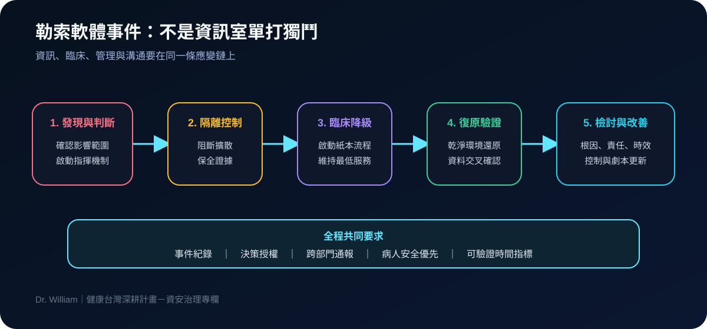
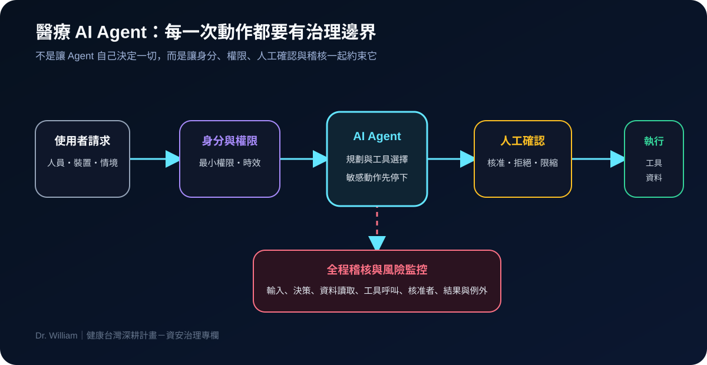

健康台灣深耕計畫-資安治理 · 2026-08-13
醫療韌性不是備份打勾：六項資安治理行動
作者：Dr. William｜醫療資訊與資安治理實務工作者
醫療資安治理營運韌性主權雲零信任
我讀這份計畫內容時，最在意的不是能買哪些設備，而是醫院遇到攻擊後，能不能繼續提供安全的臨床服務。備份、權限、監控與演練應該被視為同一套韌性系統，而不是四張互不相干的採購單。
先看全貌：六項能力要一起運作
我把資安治理整理成六個相互連動的區塊。任何一塊缺席，都可能讓醫院在事件發生時出現斷點。
有備份，不等於真的能復原
我會先確認三件事：還原是否成功、切換需要多久、臨床端能否在降級模式下繼續工作。RTO、RPO、金鑰、系統依賴與紙本流程，都應透過演練驗證，而不是只看備份成功通知。
安全檢測要先把驗收條件寫清楚
計畫內容中有一個尚待確認的安全檢測名稱。我的做法不會是直接拿它當採購規格，而是先向計畫窗口釐清正式定義。真正可驗收的內容應包含檢測範圍、風險分級、修補時限、複測與例外接受流程。
我的判讀原則：不確定的名稱就標示不確定，不把模糊文字包裝成已存在的標準。
勒索演練要把臨床端拉進來
如果演練只有資訊室參加，就無法回答病歷中斷、檢驗回傳、藥物核對與資料補登等真正影響病人安全的問題。我會用下面這條流程設計跨部門演練。

主權雲與 AI Agent 都要有邊界
資料留在哪裡只是第一步。我還會確認次處理者、模型訓練用途、金鑰控制、資料刪除、稽核權與退出機制。如果導入 AI Agent，則要再加上工具權限、敏感動作人工確認、安全停止與完整操作紀錄。

我會先做的五件事
- 挑一套核心系統，實際做一次還原或切換演練。
- 盤點高權限、共用與委外帳號，補上負責人與到期日。
- 用臨床中斷情境進行跨部門勒索桌上演練。
- 檢查雲端與 AI 合約的資料用途、刪除及稽核條款。
- 把 MDR／XDR 告警到處置的責任與時效寫清楚。
結語
我認為真正值得衡量的，不是「完成多少建置」，而是「遇到事件後多久能安全恢復」。當控制可以被演練、量測與改善，資安才會從資訊部門的工作，變成醫療品質的一部分。
內容說明
本文依健康台灣深耕計畫相關治理內容整理，並加入我的實務判讀；不取代主管機關正式公告、法律意見或個別醫院風險評估。
延伸影音：醫院如何接軌 AI：資料整合、系統異質與數據防護。